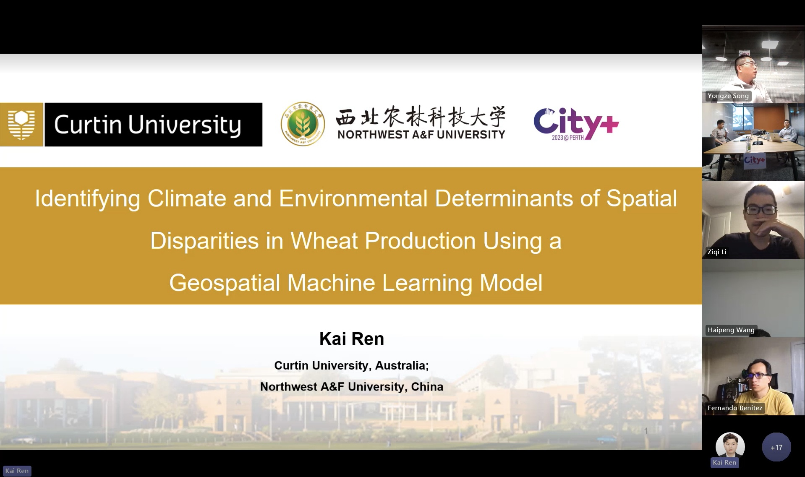

Conference Report
City+@Perth 2023: Geospatial Big Data and AI for Cities
A conference record from City+@Perth 2023, where I served as an Organising Committee member and presented research on wheat yield heterogeneity in Western Australia.

Photos
I served as an Organising Committee member of City+@Perth 2023 and presented a report on the local spatial heterogeneity of wheat yields in Western Australia.
